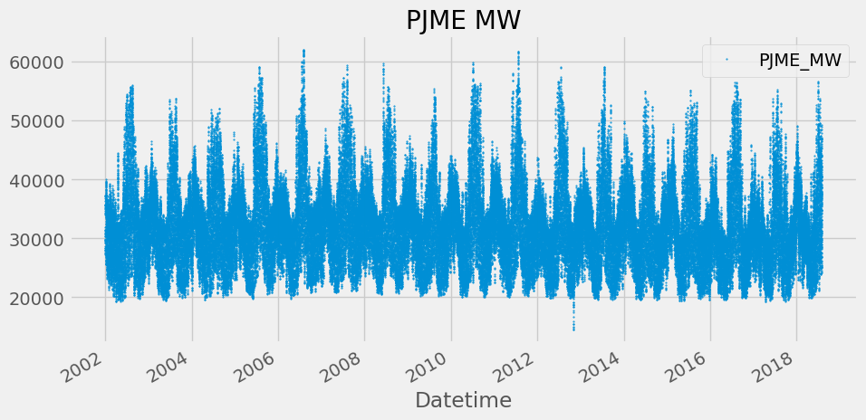
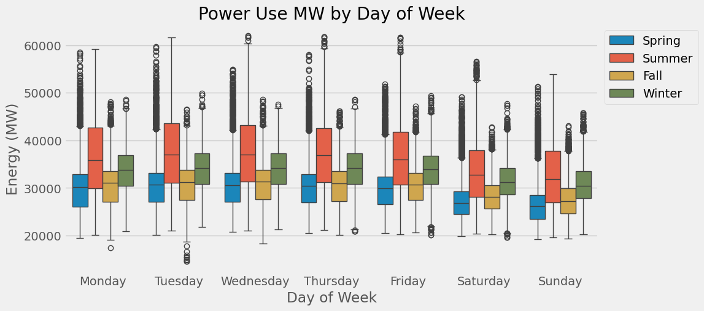
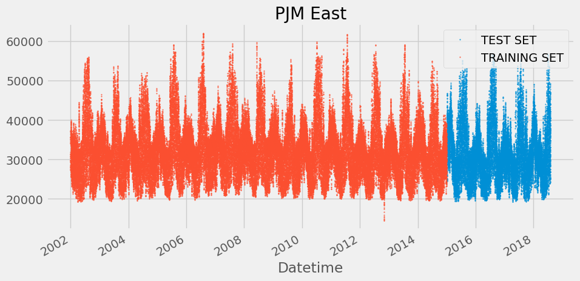
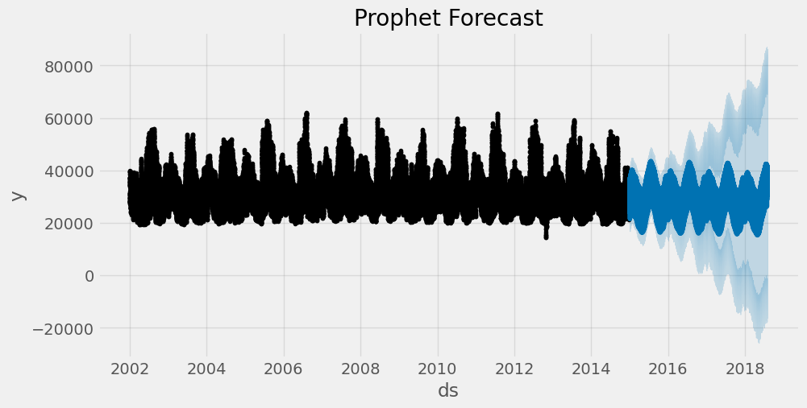
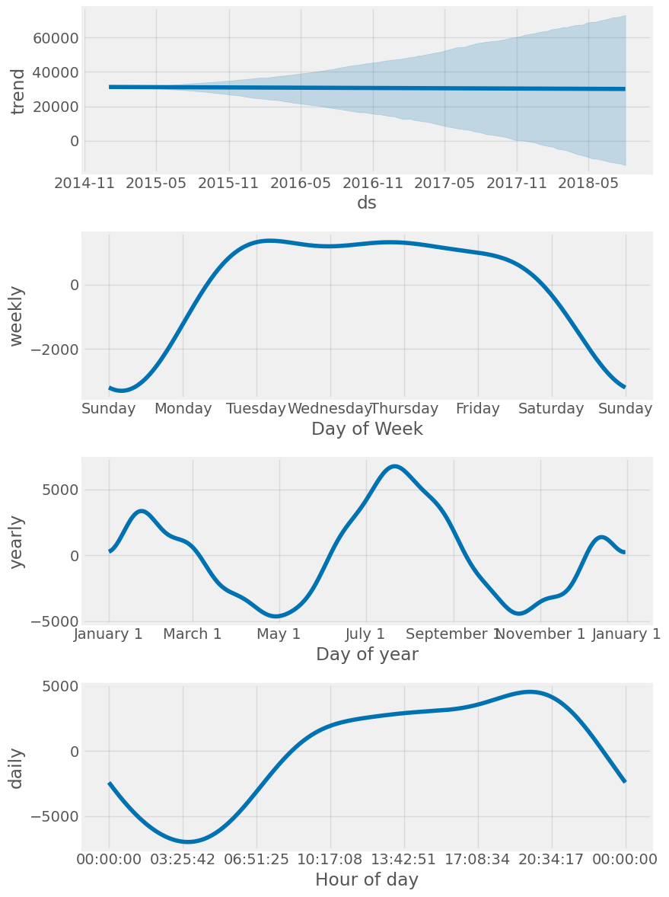
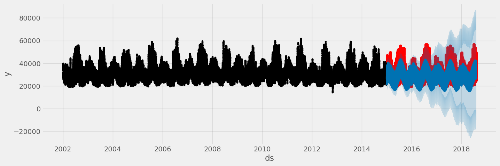
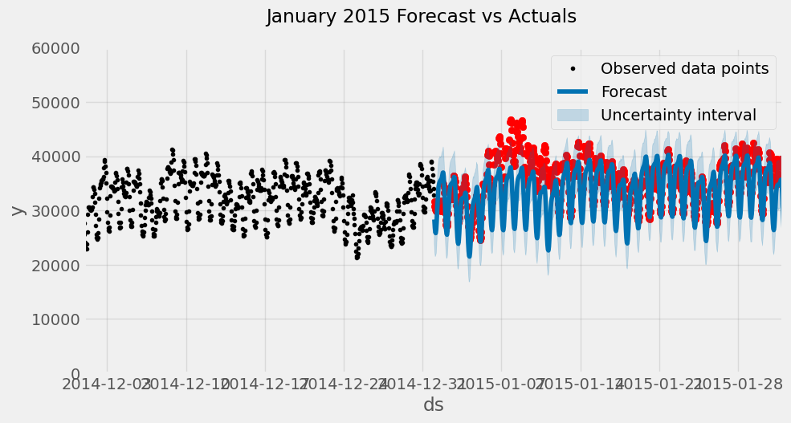
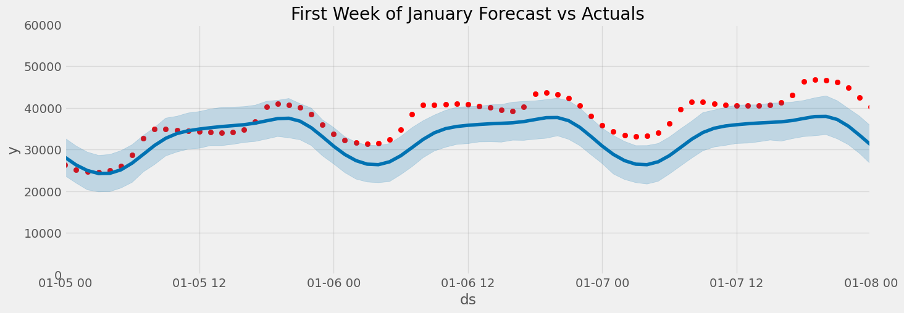
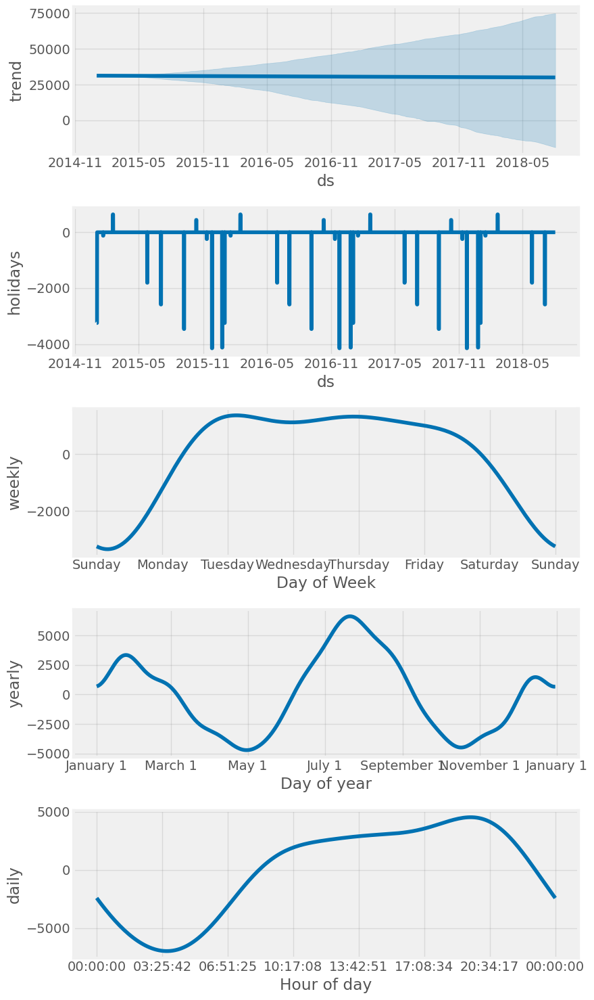
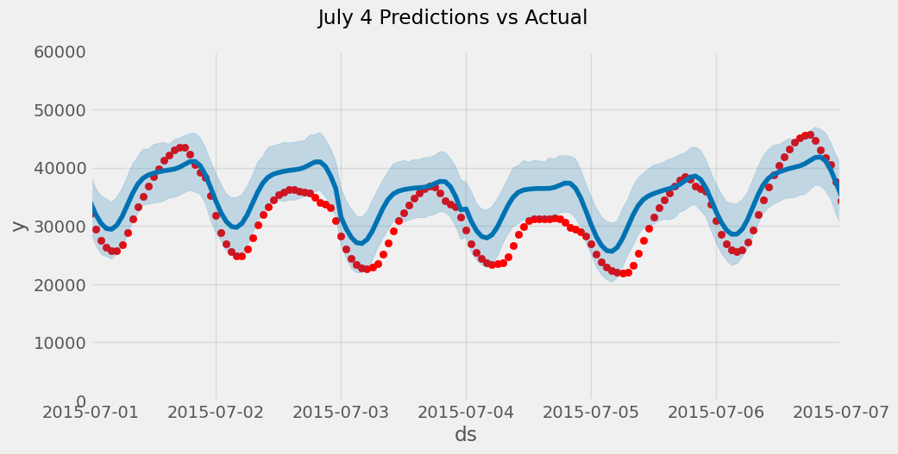

import numpy as np
import pandas as pd
import seaborn as sns
import matplotlib.pyplot as plt
from prophet import Prophet
from sklearn.metrics import mean_squared_error, mean_absolute_error
from pathlib import Path
import warnings
warnings.filterwarnings("ignore")
plt.style.use('ggplot')
plt.style.use('fivethirtyeight')
def mean_absolute_percentage_error(y_true, y_pred):
"""Calculates MAPE given y_true and y_pred"""
y_true, y_pred = np.array(y_true), np.array(y_pred)
return np.mean(np.abs((y_true - y_pred) / y_true)) * 100Hourly Time Series Forecasting using Facebook’s Prophet
Background on the Types of Time Series Data

Data
The data we will be using is hourly power consumption data from PJM. Energy consumption has some unique characteristics. It will be interesting to see how prophet picks them up.
Pulling the PJM East which has data from 2002-2018 for the entire east region.
name = 'hourly-energy-consumption'
path = Path(f'Data/{name}')
pjme = pd.read_csv(f'{path}/PJME_hourly.csv',
index_col=[0],
parse_dates=[0])
pjme.head()| PJME_MW | |
|---|---|
| Datetime | |
| 2002-12-31 01:00:00 | 26498.0 |
| 2002-12-31 02:00:00 | 25147.0 |
| 2002-12-31 03:00:00 | 24574.0 |
| 2002-12-31 04:00:00 | 24393.0 |
| 2002-12-31 05:00:00 | 24860.0 |
color_pal = sns.color_palette()
pjme.plot(style='.',
figsize=(10, 5),
ms=1,
color=color_pal[0],
title='PJME MW')
plt.show()
Time Series Features
from pandas.api.types import CategoricalDtype
cat_type = CategoricalDtype(categories=['Monday','Tuesday',
'Wednesday',
'Thursday','Friday',
'Saturday','Sunday'],
ordered=True)
def create_features(df, label=None):
"""
Creates time series features from datetime index.
"""
df = df.copy()
df['date'] = df.index
df['hour'] = df['date'].dt.hour
df['dayofweek'] = df['date'].dt.dayofweek
df['weekday'] = df['date'].dt.day_name()
df['weekday'] = df['weekday'].astype(cat_type)
df['quarter'] = df['date'].dt.quarter
df['month'] = df['date'].dt.month
df['year'] = df['date'].dt.year
df['dayofyear'] = df['date'].dt.dayofyear
df['dayofmonth'] = df['date'].dt.day
df['weekofyear'] = df['date'].dt.isocalendar().week
df['date_offset'] = (df.date.dt.month*100 + df.date.dt.day - 320)%1300
df['season'] = pd.cut(df['date_offset'], [0, 300, 602, 900, 1300],
labels=['Spring', 'Summer', 'Fall', 'Winter']
)
X = df[['hour','dayofweek','quarter','month','year',
'dayofyear','dayofmonth','weekofyear','weekday',
'season']]
if label:
y = df[label]
return X, y
return X
X, y = create_features(pjme, label='PJME_MW')
features_and_target = pd.concat([X, y], axis=1)fig, ax = plt.subplots(figsize=(10, 5))
sns.boxplot(data=features_and_target.dropna(),
x='weekday',
y='PJME_MW',
hue='season',
ax=ax,
linewidth=1)
ax.set_title('Power Use MW by Day of Week')
ax.set_xlabel('Day of Week')
ax.set_ylabel('Energy (MW)')
ax.legend(bbox_to_anchor=(1, 1))
plt.show()
Train / Test Split
split_date = '1-Jan-2015'
pjme_train = pjme.loc[pjme.index <= split_date].copy()
pjme_test = pjme.loc[pjme.index > split_date].copy()
# Plot train and test so you can see where we have split
pjme_test \
.rename(columns={'PJME_MW': 'TEST SET'}) \
.join(pjme_train.rename(columns={'PJME_MW': 'TRAINING SET'}),
how='outer') \
.plot(figsize=(10, 5), title='PJM East', style='.', ms=1)
plt.show()
Simple Prophet Model
- Prophet model expects the dataset to be named a specific way. We will rename our dataframe columns before feeding it into the model.
- Datetime column named:
ds - target :
y
- Datetime column named:
# Format data for prophet model using ds and y
pjme_train_prophet = pjme_train.reset_index() \
.rename(columns={'Datetime':'ds',
'PJME_MW':'y'})model = Prophet()
model.fit(pjme_train_prophet)18:04:09 - cmdstanpy - INFO - Chain [1] start processing
18:04:59 - cmdstanpy - INFO - Chain [1] done processing<prophet.forecaster.Prophet># Predict on test set with model
pjme_test_prophet = pjme_test.reset_index() \
.rename(columns={'Datetime':'ds',
'PJME_MW':'y'})
pjme_test_fcst = model.predict(pjme_test_prophet)pjme_test_fcst.head()| ds | trend | yhat_lower | yhat_upper | trend_lower | trend_upper | additive_terms | additive_terms_lower | additive_terms_upper | daily | ... | weekly | weekly_lower | weekly_upper | yearly | yearly_lower | yearly_upper | multiplicative_terms | multiplicative_terms_lower | multiplicative_terms_upper | yhat | |
|---|---|---|---|---|---|---|---|---|---|---|---|---|---|---|---|---|---|---|---|---|---|
| 0 | 2015-01-01 01:00:00 | 31210.530967 | 23912.189071 | 32701.384160 | 31210.530967 | 31210.530967 | -2893.742472 | -2893.742472 | -2893.742472 | -4430.272423 | ... | 1281.328732 | 1281.328732 | 1281.328732 | 255.201219 | 255.201219 | 255.201219 | 0.0 | 0.0 | 0.0 | 28316.788495 |
| 1 | 2015-01-01 02:00:00 | 31210.494154 | 22326.307825 | 31018.012373 | 31210.494154 | 31210.494154 | -4398.239425 | -4398.239425 | -4398.239425 | -5927.272577 | ... | 1272.574102 | 1272.574102 | 1272.574102 | 256.459050 | 256.459050 | 256.459050 | 0.0 | 0.0 | 0.0 | 26812.254729 |
| 2 | 2015-01-01 03:00:00 | 31210.457342 | 21462.567951 | 30599.849415 | 31210.457342 | 31210.457342 | -5269.974485 | -5269.974485 | -5269.974485 | -6790.346308 | ... | 1262.613389 | 1262.613389 | 1262.613389 | 257.758434 | 257.758434 | 257.758434 | 0.0 | 0.0 | 0.0 | 25940.482857 |
| 3 | 2015-01-01 04:00:00 | 31210.420529 | 21734.347259 | 30591.022280 | 31210.420529 | 31210.420529 | -5411.456410 | -5411.456410 | -5411.456410 | -6922.126021 | ... | 1251.570211 | 1251.570211 | 1251.570211 | 259.099400 | 259.099400 | 259.099400 | 0.0 | 0.0 | 0.0 | 25798.964119 |
| 4 | 2015-01-01 05:00:00 | 31210.383716 | 22005.992294 | 31027.473128 | 31210.383716 | 31210.383716 | -4737.018106 | -4737.018106 | -4737.018106 | -6237.080479 | ... | 1239.580401 | 1239.580401 | 1239.580401 | 260.481971 | 260.481971 | 260.481971 | 0.0 | 0.0 | 0.0 | 26473.365610 |
5 rows × 22 columns
fig, ax = plt.subplots(figsize=(10, 5))
fig = model.plot(pjme_test_fcst, ax=ax)
ax.set_title('Prophet Forecast')
plt.show()
fig = model.plot_components(pjme_test_fcst)
plt.show()
Compare Forecast to Actuals
# Plot the forecast with the actuals
f, ax = plt.subplots(figsize=(15, 5))
ax.scatter(pjme_test.index, pjme_test['PJME_MW'], color='r')
fig = model.plot(pjme_test_fcst, ax=ax)
pjme_test['PJME_MW'].head()Datetime
2015-12-31 01:00:00 24305.0
2015-12-31 02:00:00 23156.0
2015-12-31 03:00:00 22514.0
2015-12-31 04:00:00 22330.0
2015-12-31 05:00:00 22773.0
Name: PJME_MW, dtype: float64fig, ax = plt.subplots(figsize=(10, 5))
ax.scatter(pjme_test.index, pjme_test['PJME_MW'], color='r')
fig = model.plot(pjme_test_fcst, ax=ax)
ax.set_xbound(lower=pd.to_datetime('12-01-2014'),
upper=pd.to_datetime('02-01-2015'))
ax.set_ylim(0, 60000)
ax.legend()
plot = plt.suptitle('January 2015 Forecast vs Actuals')
# Plot the forecast with the actuals
f, ax = plt.subplots(figsize=(15, 5))
ax.scatter(pjme_test.index, pjme_test['PJME_MW'], color='r')
fig = model.plot(pjme_test_fcst, ax=ax)
ax.set_xbound(lower= pd.to_datetime('2015-01-05'), upper=pd.to_datetime('2015-01-08'))
ax.set_ylim(0, 60000)
ax.set_title('First Week of January Forecast vs Actuals')
plt.show()
Evaluate the model with Error Metrics
np.sqrt(mean_squared_error(y_true=pjme_test['PJME_MW'],
y_pred=pjme_test_fcst['yhat']))6616.966074225221mean_absolute_error(y_true=pjme_test['PJME_MW'],
y_pred=pjme_test_fcst['yhat'])5181.911537928106mean_absolute_percentage_error(y_true=pjme_test['PJME_MW'],
y_pred=pjme_test_fcst['yhat'])16.512003880182647Adding Holidays
Next we will see if adding holiday indicators will help the accuracy of the model. Prophet comes with a Holiday Effects parameter that can be provided to the model prior to training.
We will use the built in pandas USFederalHolidayCalendar to pull the list of holidays
from pandas.tseries.holiday import USFederalHolidayCalendar as calendar
cal = calendar()
holidays = cal.holidays(start=pjme.index.min(),
end=pjme.index.max(),
return_name=True)
holiday_df = pd.DataFrame(data=holidays,
columns=['holiday'])
holiday_df = holiday_df.reset_index().rename(columns={'index':'ds'})model_with_holidays = Prophet(holidays=holiday_df)
model_with_holidays.fit(pjme_train_prophet)18:05:15 - cmdstanpy - INFO - Chain [1] start processing
18:06:36 - cmdstanpy - INFO - Chain [1] done processing<prophet.forecaster.Prophet># Predict on training set with model
pjme_test_fcst_with_hols = \
model_with_holidays.predict(df=pjme_test_prophet)fig = model_with_holidays.plot_components(
pjme_test_fcst_with_hols)
plt.show()
fig, ax = plt.subplots(figsize=(10, 5))
ax.scatter(pjme_test.index, pjme_test['PJME_MW'], color='r')
fig = model.plot(pjme_test_fcst_with_hols, ax=ax)
ax.set_xbound(lower=pd.to_datetime('07-01-2015'),
upper=pd.to_datetime('07-07-2015'))
ax.set_ylim(0, 60000)
plot = plt.suptitle('July 4 Predictions vs Actual')
np.sqrt(mean_squared_error(y_true=pjme_test['PJME_MW'],
y_pred=pjme_test_fcst_with_hols['yhat']))6639.587205626055mean_absolute_error(y_true=pjme_test['PJME_MW'],
y_pred=pjme_test_fcst_with_hols['yhat'])5201.46462763833mean_absolute_percentage_error(y_true=pjme_test['PJME_MW'],
y_pred=pjme_test_fcst_with_hols['yhat'])16.558807523531467Predict into the Future
We can use the built in make_future_dataframe method to build our future dataframe and make predictions.
future = model.make_future_dataframe(periods=365*24, freq='h', include_history=False)
forecast = model_with_holidays.predict(future)forecast[['ds','yhat']].head()| ds | yhat | |
|---|---|---|
| 0 | 2015-01-01 01:00:00 | 25567.271675 |
| 1 | 2015-01-01 02:00:00 | 24065.351481 |
| 2 | 2015-01-01 03:00:00 | 23195.828972 |
| 3 | 2015-01-01 04:00:00 | 23056.212620 |
| 4 | 2015-01-01 05:00:00 | 23732.192245 |